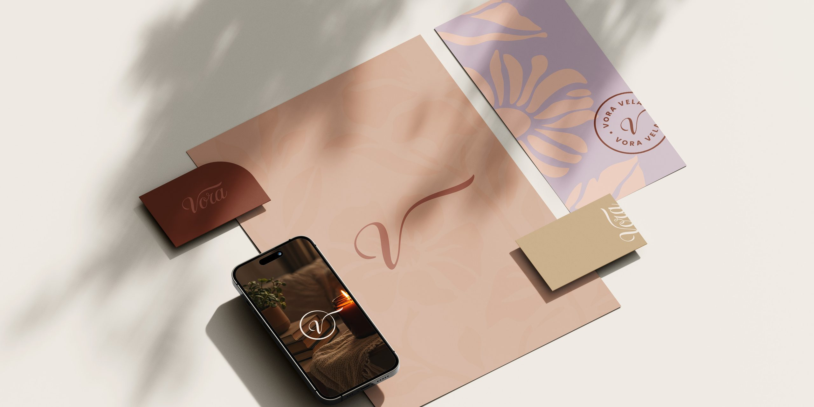

Signs it's time to stop designing everything yourself
Most studio owners don't decide to get help. They realize it at 11pm, redoing a file that was due this morning. Here's how to see it coming a bit earlier.
 By Julia Sonda · · 4 min read
By Julia Sonda · · 4 min read

Most small studios and agencies start the same way. Someone is great at design, clients start asking for more, and that someone keeps saying yes. For a while it works beautifully. Then one Thursday night you're resizing banners for a deadline that was this morning, and you can't remember the last time you had a free Saturday.
Nobody plans to become the bottleneck of their own business. It sneaks up on you. So here are the signs I'd look for, roughly from the quiet ones to the loud ones.
1. You've started saying no to work you'd love to do
I don't mean the projects that don't fit, I mean the good ones. A brand you'd have loved to work on, a client who found you through a referral, a retainer that would make next year easier. If the only reason you're turning it down is that there's no room in your week, the problem is capacity, and that one has solutions.
2. Everything waits for you
Files, approvals, the final export, the email to the printer. If the work stops every time you're in a meeting, sick or on a plane, your studio is only as fast as one person. That's fine at the start. It gets risky the moment clients depend on you for things with real deadlines.
3. Your evenings have become the production department
Daytime is for calls, emails and putting out fires. The actual design happens after dinner. It can feel productive for a few months, and then it shows up in the work. Tired eyes miss things, and a tired brain usually goes for the safe idea.
4. You're doing the work you're least needed for
Look at last week. How many hours went into things only you can do, like the creative direction, the client relationship, the pricing? And how many went into adapting a layout to twelve formats or building slides from a template? The second list is usually longer than people expect, and it's the easiest one to hand over.
5. Deadlines are met, but quality is what gives
This is the one that hurts the most, because clients rarely say it out loud. Everything goes out on time, but with one round less of polish than you'd like. The kerning you'd normally fix. The mockup you'd normally redo. If “good enough” is becoming your standard because of time, and not because of the project, pay attention.
6. A client asks for something your team doesn't do
A social media agency gets asked for a full rebrand. A web studio's client needs packaging. You could learn it under pressure, or say no and watch the client take that project somewhere else, which sometimes means the whole account eventually follows. There's a third option: bring in someone who already does it, under your name.
7. You haven't worked on the business in weeks
Your own website, your pricing, the follow-up emails to that lead from last month, the case study you keep meaning to write. When client work eats every hour, the business itself stops growing, and you end up in the same place next year, only more tired.
…she's really helped my business grow.
Hire, outsource or wait?
Recognizing the signs is the easy part. Deciding what to do about them is harder. Here's a simple way I'd think about it:
- Hire when you can describe the role for the next twelve months. The volume is steady, the type of work is predictable and you want someone in your team's daily rhythm.
- Outsource when you can describe the next three projects, but not the next twelve months. The work comes in waves, needs a skill your team doesn't have, or you'd like to test how it feels to delegate before committing to a salary.
- Wait when it's truly a one-off spike. One crazy month after a launch doesn't always mean you need help. Sometimes it means you need to move one deadline and sleep.
A lot of studios end up with a mix: a small core team, plus one or two outside designers they trust for overflow and specific skills. It's a very common setup in the agencies I work with. In white-label design, the outside designer works under your name, so the work goes out as your studio's.
The fear behind the delay
If the signs are this clear, why do so many of us wait so long? Usually it's one of these:
- “Nobody will do it like me.” Maybe not exactly like you. But someone can do it to your standard if the standard is written down and you review the work at the right moments. More on that in how to keep design quality high without burning out.
- “What if my client finds out?” In a white-label setup, they don't meet the designer. You stay their point of contact for everything.
- “I don't have time to explain everything.” The first project takes some explaining, but by the fifth you'll barely need to.
- “I can't afford it.” Fair, and worth doing the math. Compare the cost with the projects you're saying no to, and with what your own hours are worth when they go into resizing instead of selling.
Where to start
You don't have to hand over your whole workload at once. Pick one type of work with clear edges, find someone you trust, and try it on a single project. I wrote a whole post on what to delegate first and what to keep.
And if a few of these signs sounded a little too familiar, tell me what's on your plate.